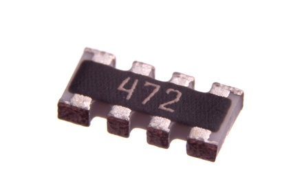
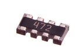

SMD (1206-8) 4.7k Ohm (x4) Resistor Array - RA1472

Summary
Name: SMD (1206-8) 4.7k Ohm (x4) Resistor Array
ID: RESA-1268-X-O472X4-01
Hex ID: RA1472
WebPage: https://github.com/oomlout/oomlout-OOMP/wiki/RESA-1268-X-O472X4-01
Short URL: http://oom.lt/RA1472
Revision History: https://github.com/oomlout/oomlout-OOMP/blob/master/parts/RESA-1268-X-O472X4-01/
| Type |
Size |
Color |
Description |
Index |
RESA
Resistor Array |
1268
SMD (1206-8) |
X
|
O472X4
4.7k Ohm (x4) |
01
|
Images

About
This part is awaiting a description.
Specifications
| Info |
Value |
| Type |
Resistor Array |
| Size |
SMD (1206-8) |
| Description |
4.7k Ohm (x4) |
| Width |
1.6 mm |
| Length |
3.2 mm |
| Number of Pins |
8 |
| Tolerance |
5% |
| Power Rating |
62.5 mW |
Extra Details
Spotted a mistake, want to add more? Let us know oomp@oomlout.com
All images and resources are licensed [CC BY-SA] unless otherwise stated (ie. the datasheets)